Marketing
Gestión de listas, templates, campañas de email, formularios y eventos
Listas de Marketing
Las listas permiten segmentar contactos para campañas de email y otras acciones comerciales. Orion Hub soporta dos tipos de listas: Static y Dynamic.
Listas Estáticas
Guardan una foto fija de los contactos al momento de crearlas. No se actualizan automáticamente.
Listas Dinámicas (Smart Lists)
Se actualizan automáticamente a medida que los contactos cumplen o dejan de cumplir los criterios de filtro definidos.
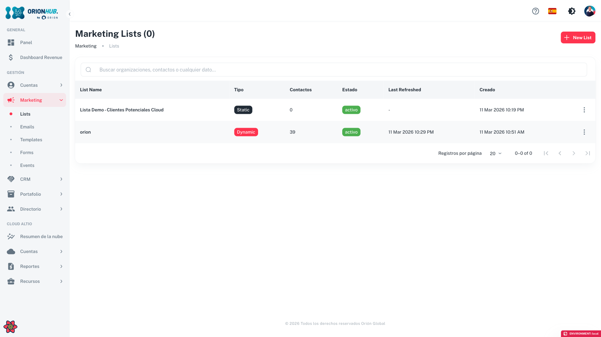
Para acceder, navegue a Marketing → "Lists" en el menú lateral. Desde aquí puede ver todas las listas existentes y crear nuevas con el botón "+ New List".
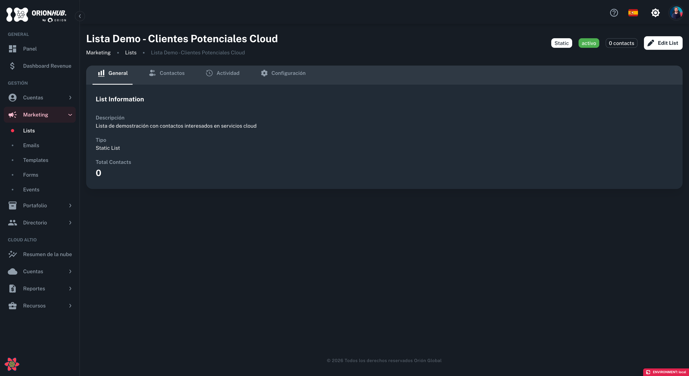
Al hacer clic en una lista, accede a su vista de detalle que incluye pestañas para ver la información general, los contactos incluidos, la actividad reciente y la configuración de la lista.
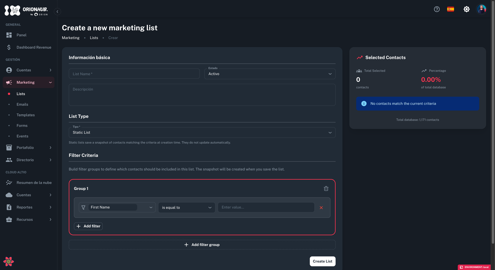
Templates de Email
Los templates son plantillas reutilizables para campañas de email. Se crean con el editor visual drag-and-drop de GrapesJS que permite diseñar emails profesionales sin necesidad de conocer HTML. Cada template incluye un subject, preheader y categoría.
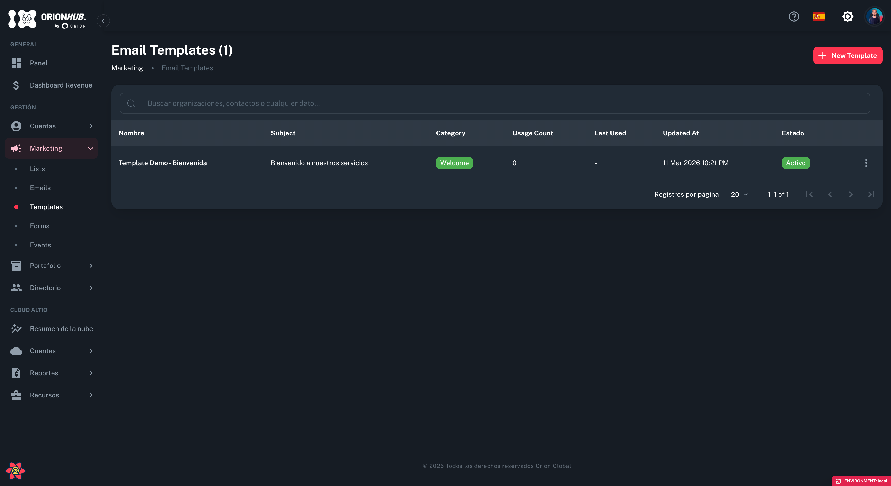
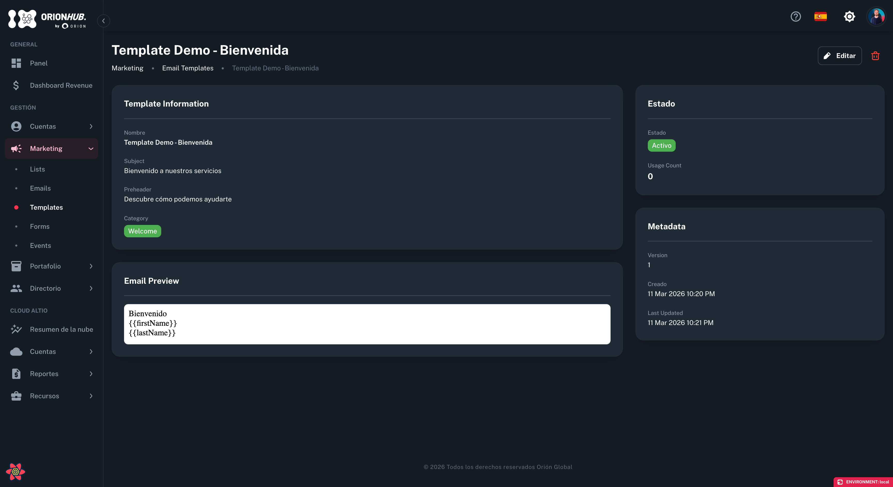
Para acceder, navegue a Marketing → "Templates".
Los templates soportan variables de personalización como {{firstName}} y
{{lastName}} para adaptar el contenido a cada destinatario.
Campañas de Email
Las campañas combinan un template con una lista de destinatarios para enviar emails masivos. Cada campaña registra métricas detalladas de entrega: recipients, sent, open rate y fails.
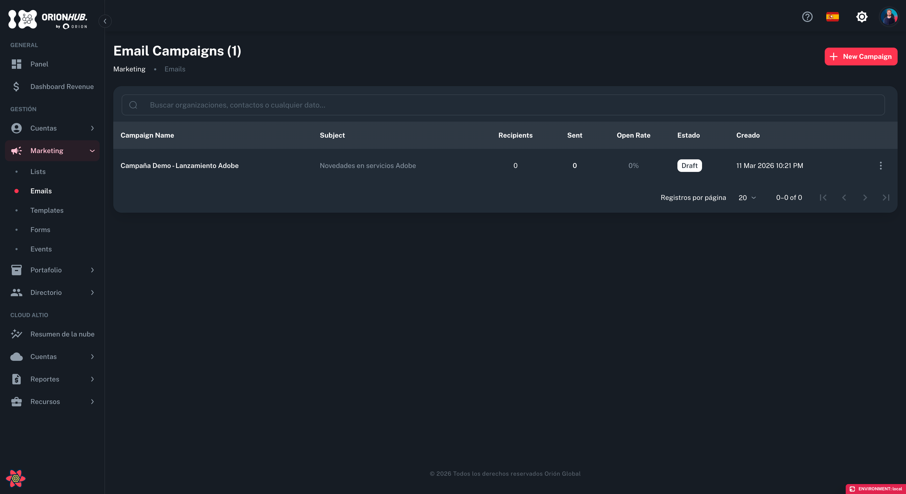
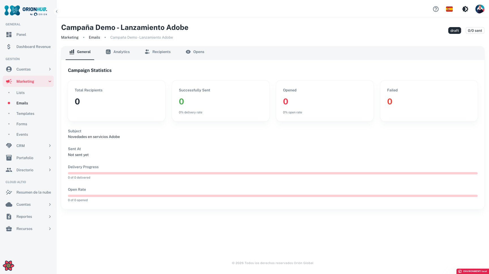
Crear la campaña
Haga clic en "+ New Campaign". Complete el nombre, subject, seleccione un template y asigne las listas de destinatarios.
Revisar y enviar
Desde el detalle de la campaña, revise las estadísticas en las pestañas "General", "Analytics", "Recipients" y "Opens". Cuando esté listo, envíe la campaña.
Monitorear resultados
Las barras de progreso muestran en tiempo real los emails entregados y abiertos. Use estos datos para optimizar futuras campañas.
Formularios
Los formularios capturan leads directamente desde su sitio web. Cada formulario genera una URL pública y un código de inserción (embed code) para integrarlo en cualquier página. Los envíos se registran con métricas de confirmación y detección de spam.
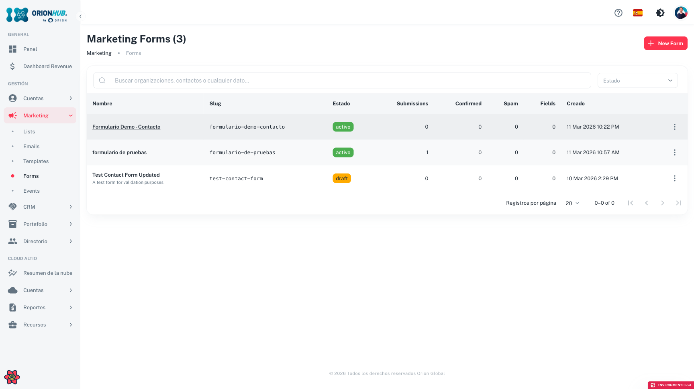
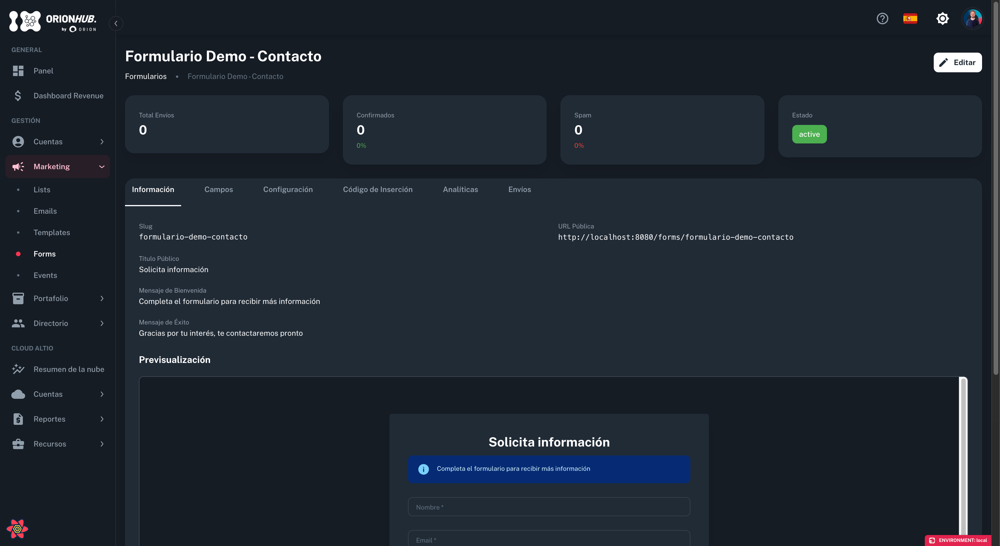
URL Pública
Cada formulario tiene su propia URL accesible directamente sin necesidad de embed.
Personalización
Configure título público, mensaje de bienvenida y mensaje de éxito para personalizar la experiencia del visitante.
Campos Configurables
Defina los campos del formulario desde la pestaña "Campos", incluyendo validaciones y campos obligatorios.
Código de Inserción
Obtenga el código HTML/JS desde la pestaña "Código de Inserción" para integrar el formulario en su sitio web.
Eventos
Gestione webinars, conferencias y reuniones. Cada evento puede ser virtual o presencial, con registro de ubicación/plataforma, fechas de inicio y término, y seguimiento de asistentes.
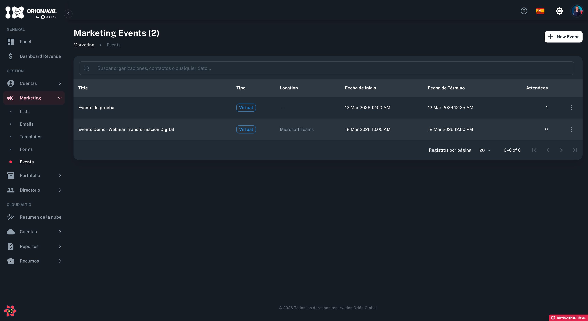
Navegue a Marketing → "Events" para ver todos los eventos. Use el botón "+ New Event" para crear un nuevo evento con todos sus detalles.
Cuentas — Oportunidades
Pipeline comercial, cotizaciones, hitos de facturación y gestión del ciclo de ventas
Navegación del Módulo
El módulo de Oportunidades se encuentra en el menú lateral bajo la sección "Gestión" → "Cuentas". Desde aquí accede a "Opportunities" y "Preventa".
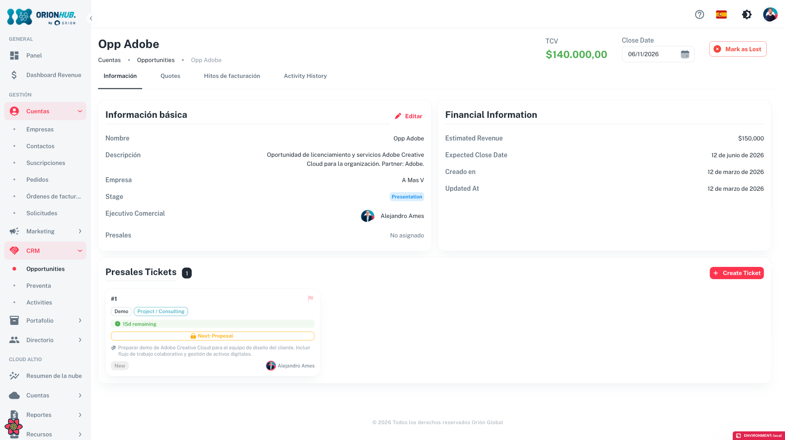
Vista Kanban de Oportunidades
La vista Kanban organiza las oportunidades por etapa del pipeline en columnas arrastrables. Cada tarjeta muestra el nombre de la oportunidad, empresa, monto estimado, fecha de cierre y ejecutivo asignado. Las columnas muestran el total acumulado por etapa.
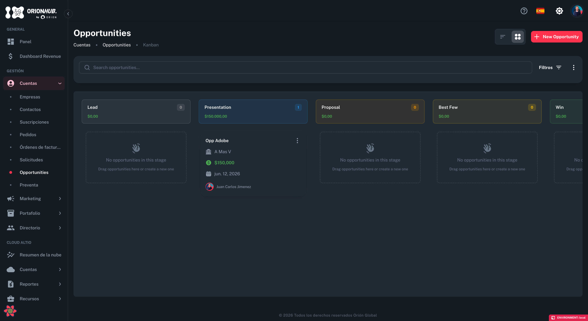
| Etapa | Probabilidad | Descripción |
|---|---|---|
| Presentation | 25% | Presentación inicial al cliente. La oportunidad ha sido identificada y se está preparando la propuesta de valor. |
| Proposal | 50% | Se ha enviado una propuesta formal al cliente. Se están negociando términos y condiciones. |
| Best Few | 75% | El cliente ha reducido las opciones a los mejores candidatos. Alta probabilidad de cierre. |
| Win | 100% | La oportunidad ha sido ganada. Se procede con la implementación y facturación. |
Vista de Lista
La vista de lista presenta todas las oportunidades en formato tabular con columnas ordenables: nombre, empresa, etapa, revenue estimado, ejecutivo y fecha estimada de cierre. Ideal para búsquedas y filtros avanzados.
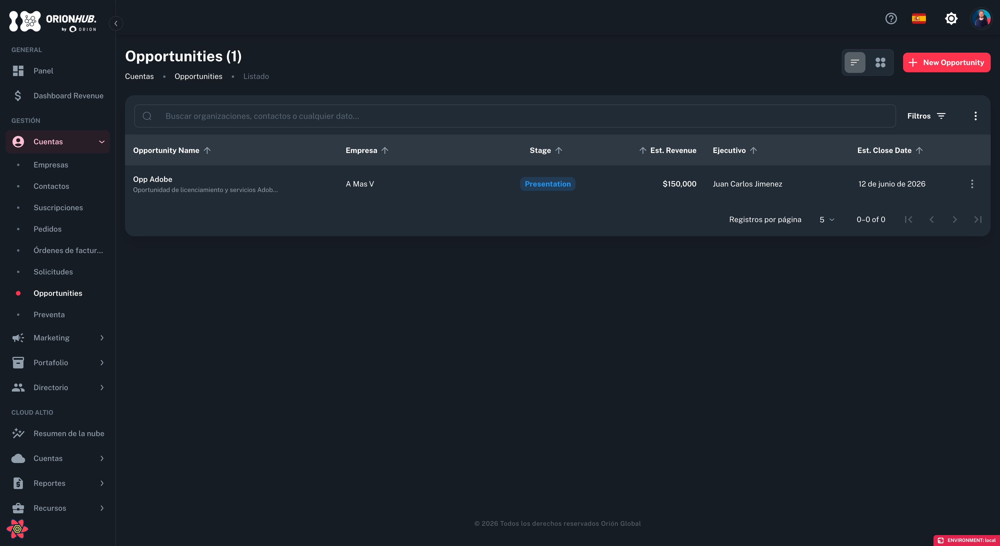
Detalle de Oportunidad — Información
La vista de detalle es el centro de comando de cada oportunidad. Muestra toda la información organizada en cuatro pestañas: "Información", "Quotes", "Hitos de facturación" y "Activity History". En la cabecera se muestra el TCV (Total Contract Value), la fecha de cierre editable y el botón "Mark as Lost".
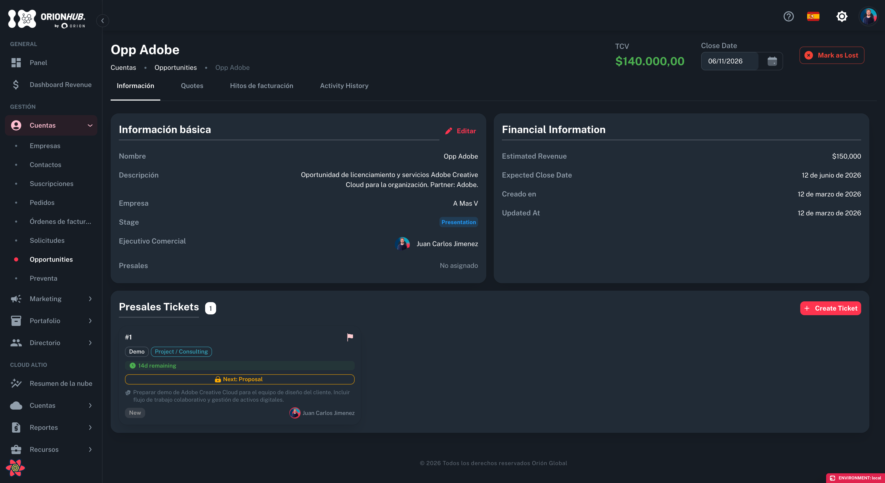
Información Básica
Nombre, descripción, empresa, stage actual, ejecutivo comercial y presales asignado.
Financial Information
Estimated Revenue, Expected Close Date, fecha de creación y última actualización.
Presales Tickets
Tickets de preventa vinculados con prioridad, tipo, plazo de entrega y stage de bloqueo.
Quote Items — Cotización
La pestaña "Quotes" gestiona los ítems cotizados de la oportunidad. Cada quote item incluye: SKU (producto), customer term, ciclo de facturación, cantidad, precio, costo, margen porcentual, descuento, subtotal y total. El sistema calcula automáticamente los totales y el TCV.
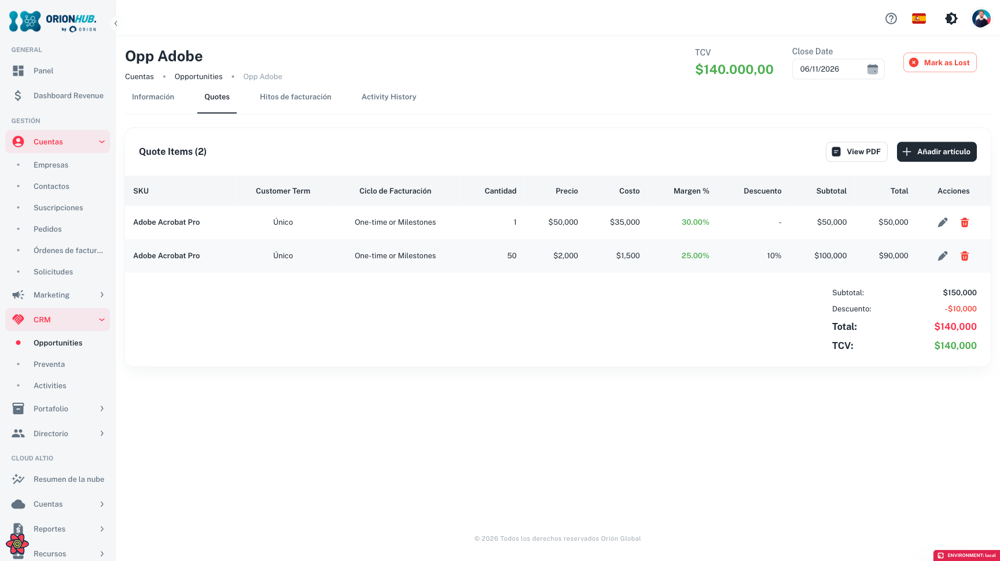
Use el botón "+ Añadir artículo" para agregar nuevos items y "View PDF" para generar un PDF de la cotización.
Hitos de Facturación
Los hitos de facturación (billing milestones) se generan automáticamente cuando los quote items tienen ciclo de facturación "One-time or Milestones". Cada hito registra: item, número de milestone, fecha de pago, monto, costo, margen porcentual y comentarios.
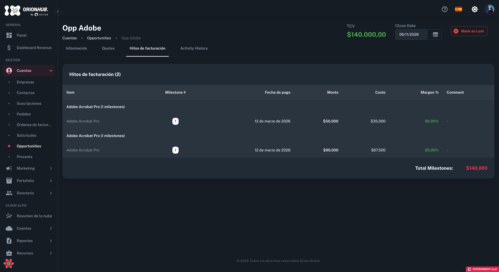
Historial de Actividad
La pestaña "Activity History" registra cronológicamente todas las acciones realizadas en la oportunidad: creación de quote items, cambios de ejecutivo, actualizaciones de stage, etc. Cada entrada muestra el tipo de acción, el usuario responsable y los detalles específicos del cambio.
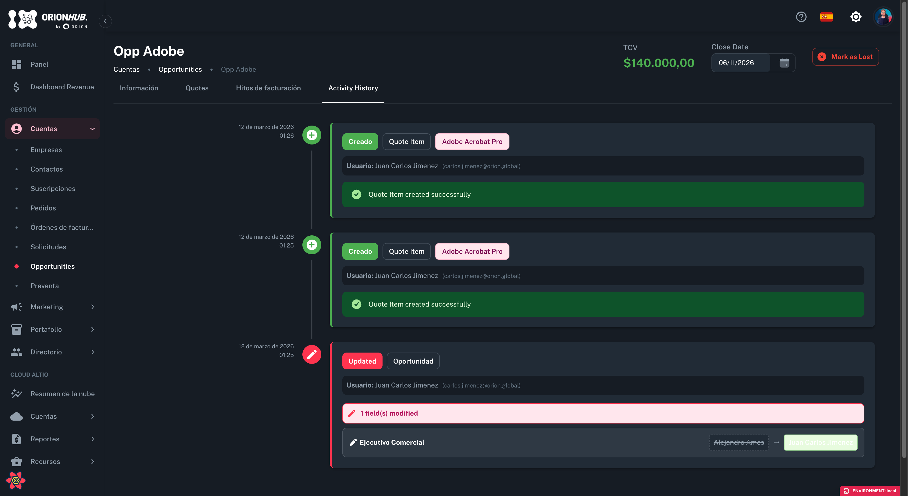
Crear Nueva Oportunidad
Para crear una oportunidad, haga clic en "+ New Opportunity" desde la vista de Kanban o lista. Complete los campos obligatorios marcados con asterisco (*).
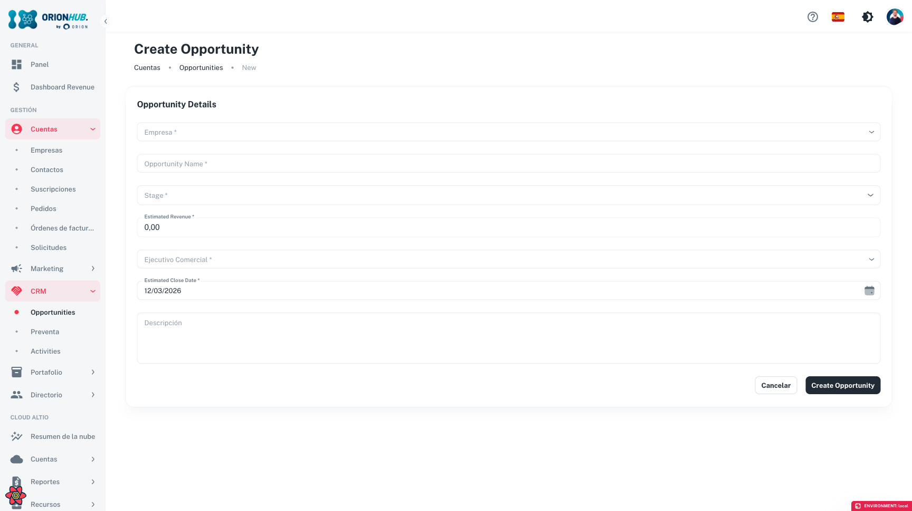
Seleccionar Empresa
Busque y seleccione la empresa (organización) asociada a esta oportunidad.
Definir nombre y etapa
Asigne un nombre descriptivo y seleccione la etapa inicial del pipeline (generalmente "Presentation").
Completar datos financieros
Ingrese el revenue estimado y la fecha estimada de cierre. Asigne el ejecutivo comercial responsable.
Guardar
Haga clic en "Create Opportunity". La oportunidad aparecerá en el pipeline y podrá comenzar a agregar quote items.
Marcar Oportunidad como Perdida
Cuando una oportunidad no se concreta, puede marcarla como perdida usando el botón "Mark as Lost" en la cabecera del detalle. Esto abre un diálogo donde debe ingresar obligatoriamente la razón de la pérdida.
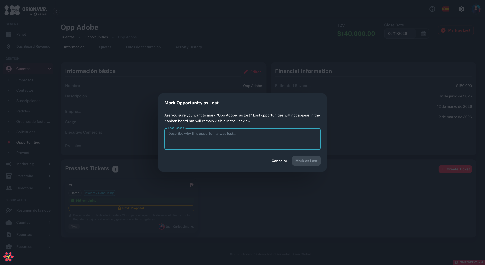
Preventa
Gestión de tickets de preventa vinculados a oportunidades comerciales
Tablero Kanban de Tickets
Los tickets de preventa se gestionan en un tablero Kanban con cuatro etapas: New, In Progress, In Review y Closed. Cada ticket muestra su número, prioridad, oportunidad vinculada, descripción, plazo de entrega y asignado.
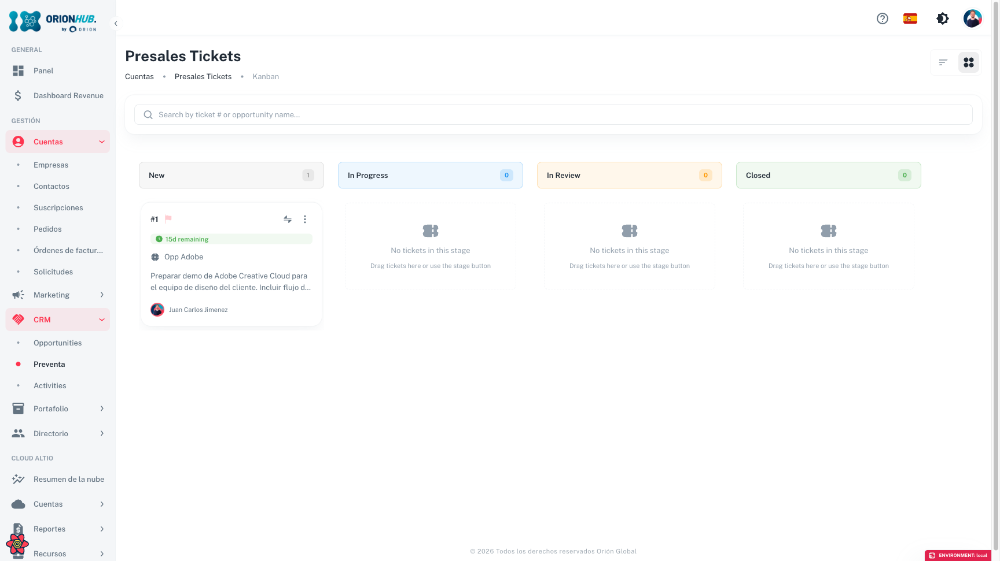
Prioridad Visual
Cada ticket muestra su nivel de prioridad con íconos de color (High = bandera roja, Medium = amarilla, Low = verde).
Tiempo Restante
Indicador de días restantes hasta la fecha de entrega, con colores que cambian según la urgencia.
Stage Blocking
Los tickets pueden bloquear el avance de la oportunidad a la siguiente etapa del pipeline hasta que se completen.
Vinculación a Oportunidad
Cada ticket está vinculado a una oportunidad específica, permitiendo ver el contexto comercial completo.
Detalle de Ticket de Preventa
La vista de detalle muestra toda la información del ticket organizada en dos paneles: información del ticket (izquierda) y notas (derecha).
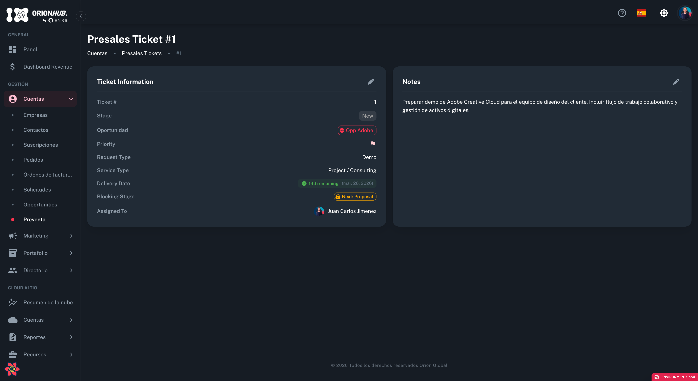
| Campo | Descripción |
|---|---|
| Stage | Etapa actual del ticket (New, In Progress, In Review, Closed) |
| Oportunidad | Enlace directo a la oportunidad vinculada |
| Priority | Nivel de prioridad: Low, Medium, High, Critical |
| Request Type | Tipo de solicitud: Budget, Demo, POC, Proposal, Meeting, etc. |
| Service Type | Tipo de servicio: Project/Consulting, Licensing, Support, etc. |
| Delivery Date | Fecha límite de entrega con indicador de días restantes |
| Blocking Stage | Etapa del pipeline que este ticket bloquea (ej: "Next: Proposal") |
| Assigned To | Persona responsable de resolver el ticket |
Configuración
Personalización de etapas del pipeline, tipos de solicitud y tipos de servicio
Etapas de Oportunidades
Configure las etapas del pipeline comercial desde Configuración → "Cuentas" → "Opportunities". Cada etapa tiene nombre, tipo (En curso / Win / Lost), probabilidad de cierre, orden de visualización y estado.
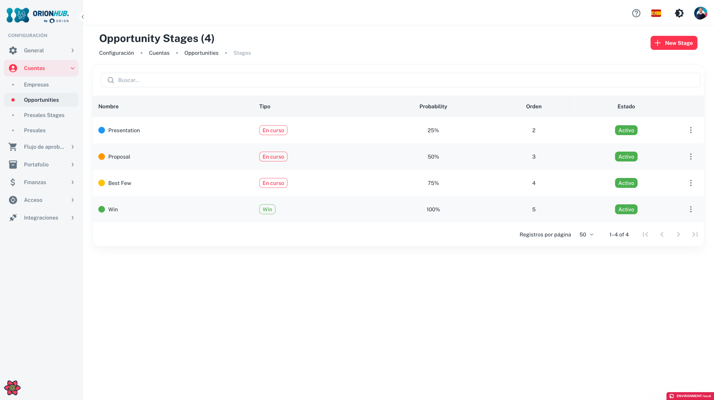
Etapas de Preventa
Las etapas del flujo de preventa se configuran en Configuración → "Cuentas" → "Presales Stages". Cada etapa define si es inicial o final, y su orden en el flujo.
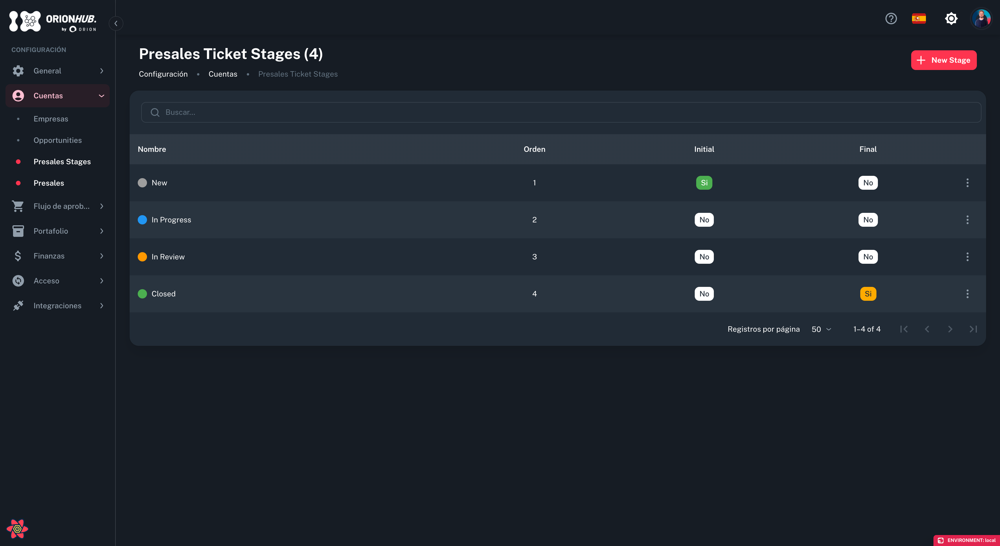
Tipos de Solicitud y Servicio de Preventa
Desde Configuración → "Cuentas" → "Presales" configure los tipos de solicitud (Request Types) y tipos de servicio (Service Types) disponibles al crear tickets de preventa.
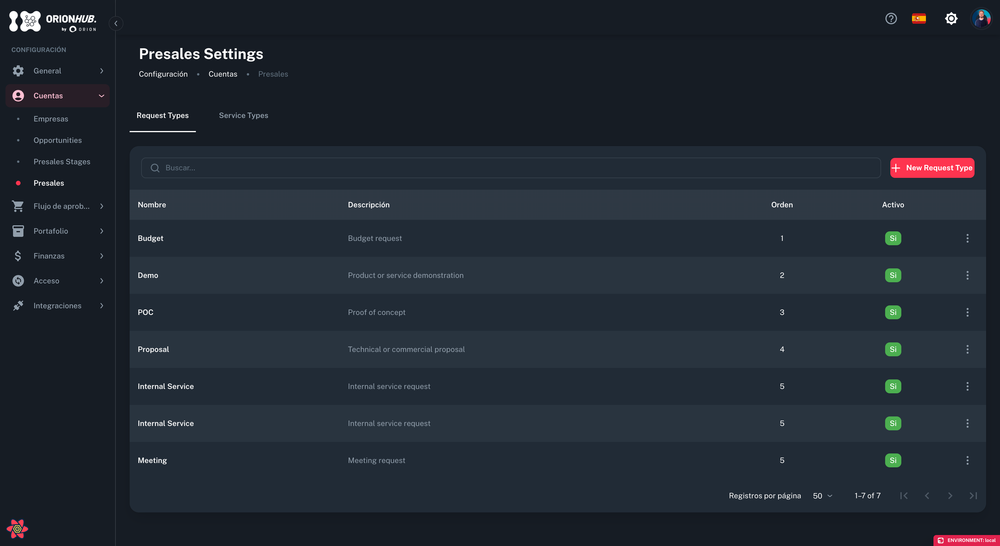
Flujo Completo del Ciclo Comercial
Diagrama integrado de Marketing → Cuentas → Preventa → Cierre
Diagrama de Flujo Integrado
Este diagrama muestra cómo los tres módulos trabajan juntos para gestionar el ciclo comercial completo, desde la generación de leads hasta el cierre de la venta.
Ciclo Comercial Completo — Marketing → Cuentas → Preventa → Cierre
Segmentar contactos
Email marketing
Captura de leads
Webinars / meetups
25% prob.
50% prob.
75% prob.
100% — Cerrado
Ticket creado
En desarrollo
En revisión
Completado
Cotización
Hitos de pago
Cobro ejecutado
Resumen de Interacciones entre Módulos
| Desde | Hacia | Interacción |
|---|---|---|
| Marketing | Cuentas | Los leads generados por formularios, campañas y eventos se convierten en oportunidades en el pipeline. |
| Cuentas | Preventa | Desde la oportunidad se crean tickets de preventa para demos, POCs, presupuestos, etc. |
| Preventa | Cuentas | Los tickets completados desbloquean etapas del pipeline, permitiendo avanzar la oportunidad. |
| Cuentas | Facturación | Los quote items generan automáticamente hitos de facturación para planificar los cobros. |